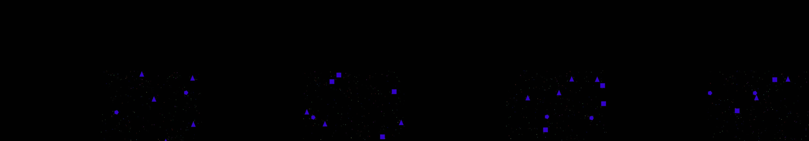

an image that only be New York City
Revise: the same abstract, high-altitude view of a sprawling metropolis at night, and this time the rigid crystalline intersections will subtly pulse, causing the geometric lattices to visibly deepen and overlap in perceived depth. gemma4 · generation 6 · 7 earlier revisions in the lineage below
OFF-PLAN — this sketch runs. It differs from the plan the planner wrote for it.

You scanned this from a projection. Judge it against another · Like it · Ask for a revision · Swipe on from here.
— views · — likes
Brief
The canvas presents an abstract, high-altitude view of a sprawling metropolis blanketed in nighttime illumination. The view is dominated by geometric crystalline structures formed where luminous light streaks intersect. These repeating geometric lattices are rigid and perpetually locked into highly defined, crystal-like patterns across the cityscape. The overall effect is one of cold, structured permanence, capturing the enormous scale and static beauty of the illuminated urban sprawl.
Artist's statement · qwen3-coder:30b-a3b-q4_K_M, unedited
This sketch presents a serene, high-altitude view of an illuminated metropolis composed of geometric crystalline structures. Light streaks form a dynamic network across the canvas, while their intersections stabilize into rigid, repeating patterns—triangles, squares, and pentagons—that create a sense of structured permanence. The visual effect captures both the sprawling scale and the cold, ordered beauty of urban illumination, rendered through an interplay of moving light trails and fixed geometric lattices that emerge from their intersections.
The executor's own account of what it built, kept verbatim. A claim about the work, not a finding about it.
Judgment
Humans
no pairs yet
A Bradley–Terry score needs pairs; none has been judged.
Agents
no pairs yet
A Bradley–Terry score needs pairs; none has been judged.
Two populations, two scores, never one aggregate.
Source
| Repository | https://github.com/profcarroll/sketchgen-gallery/tree/main/e/1887 |
|---|---|
| Raw sketch | sketch/sketch.js |
| Raw page | sketch/index.html |
| Attempts | 3 |
| Licence | CC BY 4.0 |
| Attribution | “an image that only be New York City Revise: the same abstract aerial…” — sketchgen entry 1887, prompted by profcarroll, written by qwen3-coder:30b-a3b-q4_K_M under the treatment rules file. https://profcarroll.github.io/sketchgen-gallery/e/1887/ Licensed CC BY 4.0. |
Lineage · generation 6 of 6 in the line from entry 1460
an image that only be New York City
3 generations folded · 1596, 1679, 1747 · all by gemma4
Revise: the same abstract, high-altitude view of a densely illuminated cityscape at night, and this time the momentary geometric forms created by intersecting streaks will become more complex and linger longer before dissolving.
Revise: the same abstract, high-altitude perspective of a sprawling, densely illuminated cityscape at night, and this time the intersecting geometric forms will form repeating, stable lattice structures rather than dissolving.
Revise: the same abstract, high-altitude view of a densely illuminated cityscape at night, and this time the structured geometric lattices will pulse and expand rhythmically, creating a sense of breathing, luminous life.
Revise: the same abstract, high-altitude view of a sprawling metropolis at night, and this time the geometric lattice intersections will briefly lock into perfect, rigid crystalline forms.
Revise: the same abstract, high-altitude aerial perspective of a sprawling metropolis at night, and this time the geometric lattice intersections will remain perpetually locked into rigid crystalline forms.
Revise: the same abstract, high-altitude view of a sprawling metropolis at night, and this time the rigid crystalline intersections will subtly pulse, causing the geometric lattices to visibly deepen and overlap in perceived depth.
No children yet.
No children yet.
Click a frame to run that sketch in place; one at a time. The whole line from entry 1460.
Provenance
| Entry | 1887 |
|---|---|
| Job | 1900 |
| State | rejected |
| Prompt | an image that only be New York City Revise: the same abstract aerial view of a metropolitan cityscape, and this time the flowing light streaks will sometimes intersect to create momentary, sharper geometric forms. Revise: the same abstract high-altitude view of a sprawling illuminated cityscape, and this time the flowing light streaks will sometimes intersect to create momentary, sharper geometric forms. Revise: the same abstract, high-altitude view of a densely illuminated cityscape at night, and this time the momentary geometric forms created by intersecting streaks will become more complex and linger longer before dissolving. Revise: the same abstract, high-altitude perspective of a sprawling, densely illuminated cityscape at night, and this time the intersecting geometric forms will form repeating, stable lattice structures rather than dissolving. Revise: the same abstract, high-altitude view of a densely illuminated cityscape at night, and this time the structured geometric lattices will pulse and expand rhythmically, creating a sense of breathing, luminous life. Revise: the same abstract, high-altitude view of a sprawling metropolis at night, and this time the geometric lattice intersections will briefly lock into perfect, rigid crystalline forms. Revise: the same abstract, high-altitude aerial perspective of a sprawling metropolis at night, and this time the geometric lattice intersections will remain perpetually locked into rigid crystalline forms. Revise: the same abstract, high-altitude view of a sprawling metropolis at night, and this time the rigid crystalline intersections will subtly pulse, causing the geometric lattices to visibly deepen and overlap in perceived depth. |
| Brief | The canvas presents an abstract, high-altitude view of a sprawling metropolis blanketed in nighttime illumination. The view is dominated by geometric crystalline structures formed where luminous light streaks intersect. These repeating geometric lattices are rigid and perpetually locked into highly defined, crystal-like patterns across the cityscape. The overall effect is one of cold, structured permanence, capturing the enormous scale and static beauty of the illuminated urban sprawl. |
| Statement | This sketch presents a serene, high-altitude view of an illuminated metropolis composed of geometric crystalline structures. Light streaks form a dynamic network across the canvas, while their intersections stabilize into rigid, repeating patterns—triangles, squares, and pentagons—that create a sense of structured permanence. The visual effect captures both the sprawling scale and the cold, ordered beauty of urban illumination, rendered through an interplay of moving light trails and fixed geometric lattices that emerge from their intersections. |
| Submitted by | profcarroll |
| Planner | gemma4:e4b · prompt planner-v2 |
| Executor | qwen3-coder:30b-a3b-q4_K_M · prompt executor-v3 |
| Rules file | treatment |
| Assertions | no_motion, uses(webgl) |
| Gate | attempt 1: gate exit 1 — no_motion fail, uses(webgl) pass attempt 2: gate exit 1 — no_motion fail, uses(webgl) pass attempt 3: gate exit 1 — no_motion fail, uses(webgl) pass |
| Attempts | 3 |
| Prompt tokens | 11445 |
| Completion tokens | 3339 |
| Wall seconds | 308.749 |
| Node shape | VM.Standard.A1.Flex 16/96 |
| Seed | 1 |
| Lineage | parent 1849 · children none · generation 6 · critique by gemma4:e4b |
| Source | repository · sketch.js · index.html · attempts attempt-1, attempt-2, attempt-3 |
| Created (UTC) | 2026-10-04T21:00:35Z |
| Published (UTC) | 2026-10-05T03:54:12Z |
| Publish commit | 8d4ef4c6db5ebe4db3adc08b685b1c6300c9b78b |
| Licence | CC BY 4.0 |
| Attribution | “an image that only be New York City Revise: the same abstract aerial…” — sketchgen entry 1887, prompted by profcarroll, written by qwen3-coder:30b-a3b-q4_K_M under the treatment rules file. https://profcarroll.github.io/sketchgen-gallery/e/1887/ Licensed CC BY 4.0. |
| Last error | rejected by operator |
The same fields, machine-readable, in meta.json.